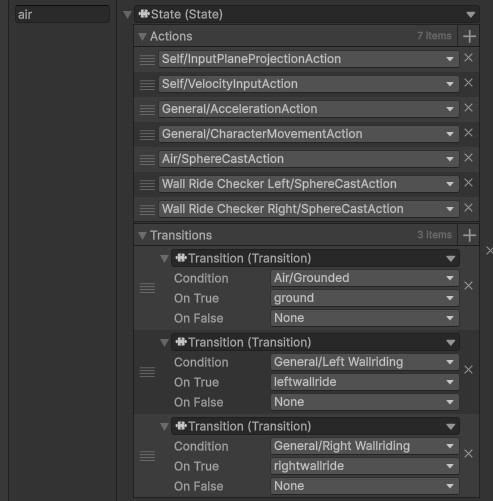
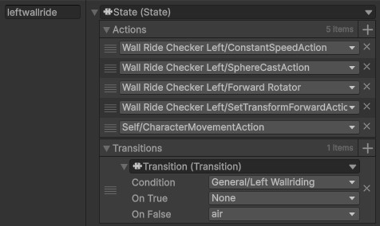
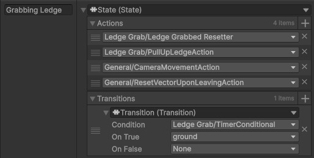

The first state is the grounded state. The grounded state allows for walking, ground detection, as well as a variety of inputs. This is a very malleable state, where movement could be changed to suit the needs of the character controller. In this case in particular, I use some simple FPS movement.
Titanfall Inspired Character Controller
A character controller with lots of fluid movement options.
This character controller was built to be similar to Titanfall's character controller. Additionally, it takes Lucio from Overwatch's wallride mechanics and combined them into a full FPS character controller. This system uses some of the systems I have built previously, namely my Finite State Machine and Data Binding System.

To begin with, it uses a single state machine to organize all the states, with the original plan of states being shown in the adjacent image. This is potentially not ideal, depending on how complex the character must be. But it is an excellent showcase for how powerful the FSM system I built is when the system is typically used for enemy AI. There ended up being a few more states than in my original plan. For example, it was easier to separate wall riding into left and right wall riding than it was to keep it together as a single wall riding state.

The aerial state is similar to the grounded state, but with the addition of gravity and altered movement dynamics. It would be trivial to add something like bunny hopping in a similar way to how DUSK achieves the same effect.
The dash state is very simple, all it needs is to reset the velocity and to go into the direction of movement.

The wall ride state is a bit more complex, as it needs to follow along the wall even if it is curved, meaning it cannot be quite as simple as the dash state. However, it does not need to be as complex as the ground state either. Additionally, the wall ride state is split into left and right wall ride states due to the ease of creating actions that are required for it. This wall ride is closer to Lucio from Overwatch than Titanfall's, mostly because I find that wall ride more fun.
The jump state is merely a transitionary state to ensure that jumping isn't considered immediately grounded. Other than that, it uses an impulse boost to velocity in order to jump.

The ledge grab state is the final state. Effectively, if ledges are labeled as grabbable by having a hitbox on the edge with the correct physics layer, it will pull the player up to the correct spot. There are additionally two variants. One for short ledges and one for high ledges, with different pull up speeds.
While rough around the edges and arcady due to the lack of animations and general visual polish, this is mechanically very similar to Titanfall's character controller and is easily expandable and editable for a designer or programmer.